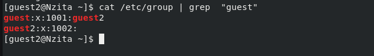

Целью данной работы является прибретенеие
практических навыков работы в консоли с атрибутами файлов для групп
пользователей.
Задачи:
Изучение команд для просмотра и изменения прав доступа
Составление таблицы с соответствием прав и разрешенных действий
Инструмент VirtualBox, bash
Выполнение лабораторной работы
Создание нового пользователся guest2
Создание нового пользователся guest2 и
добавление его в гпуппу guest
Просмотр информации о группах пользователя
Просмотр информации о группах
пользоватей
Просмотр информации о группах пользователя

Просмотр информации о группах
пользователей в файле /etc/group
Изменение прав доступа
Изменение прав доступа
Изменение прав доступа
Изменение прав доступа
Минимальные права для совершения операций
Минимальные права для совершения операций
Операция
Минимальные права на директорию
Минимальные права на файл
Создание файла
d(300)
(000)
Удаление файла
d(300)
(000)
Чтение файла
d(100)
(400)
Запись в файл
d(100)
(200)
Переименование файла
d(300)
(000)
Создание поддиректории
d(300)
(000)
Удаление поддиректории
d(300)
(000)
Заключение
Выводы
В результате выполнения работы были приобритены рактические навыки
работы в консоли с атрибутами файлов для групп пользователей.
Список литературы
Граннеман С. Linux. Карманный справочник. 2-е изд. Вильямс, 2019.
464 с.
Паралленые вычеслия в УрО РАН Параллельные вычисления в УрО РАН.
Материалы к спецкурсу ОС (Unix) Inode и каталоги [Электронный ресурс].
Red Hat, Inc., 2020. URL: https://parallel.uran.ru/node/382.